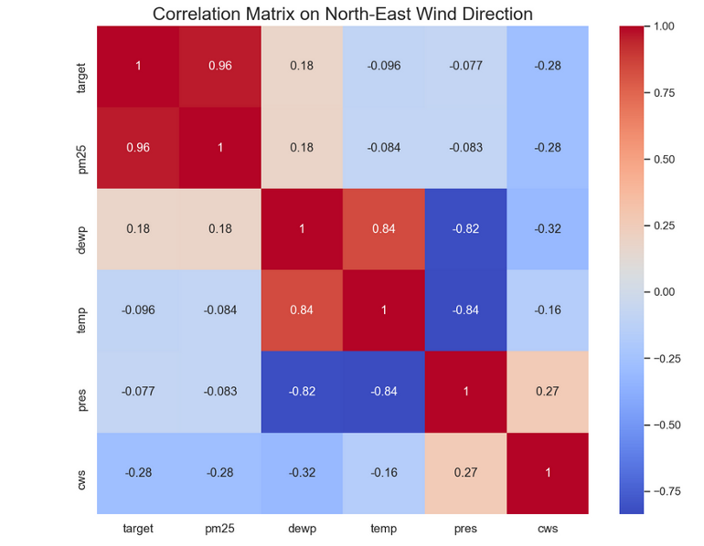

General
Misc
- First contact with an unfamiliar database
- select * from limit 50
- Look for keys/fields to connect tables
- Make running list of Qs, try to answer them by poking around first
- Find team/code responsible for DB and ask for time to review questions communication can be a superpower here!
- Use domain knowledge to assess peculier relationships
- Example: Is there a nonlinear relationship between Driver hours and Incentive Level
- Common sense says if we raise payment bonuses, we should see more drivers want to work more hours.
- Reason behind the relationship shown in this chart is omitted variables: weather and holiday.
- Incentives stop having an effect on drivers because they hate going out in shitty weather and want to stay home with their family on the holidays.
- Example: Is there a nonlinear relationship between Driver hours and Incentive Level
Basic Cleaning
- Tidy column names
- Shrink long column names to something reasonable enough for an axis label
- Make sure continuous variables arent initially coded as categoricals and vice versa
- Make note of columns with several values per cell and will need to be separated into multiple columns (e.g. addresses)
- Find duplicate rows
- See
- These can cause data leakage if the same row is in the test and train sets.
- Make a note to remove columns that the target is a function of
- e.g. Dont use monthly salary to predict yearly salary
- Remove columns that occur after the target event
- e.g. Using info occurring in or after a trial to predict something pre-trial
- You wont have this info beforehand when you make your prediction
- e.g. Using info occurring in or after a trial to predict something pre-trial
- Ordinal categorical
Reorder by a number in the text (parse_number)
mutate(income_category = fct_reorder(income_category, parse_number(income_category)), # manually fix category that is still out of order # moves "Less thatn $40K" to first place in the levels income_category = fct_relevel(income_category, "Less than $40K"))
Packages
Base R
coplotcan be used for quick plots of all combinations of categorical and continuous variables for up to 4 variables- See Continuous Predictor vs Outcome >> Continuous Outcome for examples
{skimr::skim} - Overall summary, check completion percentage for vars with too many NAs
-
create_report(airquality) create_report(diamonds, y = "price") # specify response variable- Runs multiple functions to analyze dataset
{dataxray} - Table with interactive distributions, summary stats, missingness, proportions. (dancho article/video)
{trelliscope} - Quick, interactive, facetted pairwise plots, built with JS
{explore} - Interactive data exploration or automated report
explore- If you want to explore a table, a variable or the relationship between a variable and a target (binary, categorical or numeric). The output of these functions is a plot (automatically checks if an attribute is categorical or numerical, chooses the best plot-type and handles outliers).describe- If you want to describe a dataset or a variable (number of na, unique values, ) The output of these functions is a text.explain- To create a simple model that explains a target.explain_tree()for a decision tree,explain_forest()for a random forest andexplain_logreg()for a logistic regression.report- To generate an automated report of all variables. A target can be defined (binary, categorical or numeric)abtest- To test if a difference is statistically significant
{visdat} has decent visualization for group comparison, missingness, correlation, etc.
{Hmisc::describe}
sparkline::sparkline(0) des <- describe(d) plot(des) # maybe for displaying in Viewer pane print(des, 'both') # maybe just a console df of the numbers maketabs(print(des, 'both'), wide=TRUE) # for Quarto- both says display continuous and categorical
- continuous
.png)
- categorical
.png)
- Columns (from Hmisc Ref Manual)
- Info: Info which is a relative information measure using the relative efficiency of a proportional odds/Wilcoxon test on the variable relative to the same test on a variable that has no ties. Info is related to how continuous the variable is, and ties are less harmful the more untied values there are. The formula for Info is one minus the sum of the cubes of relative frequencies of values divided by one minus the square of the reciprocal of the sample size. The lowest information comes from a variable having only one distinct value following by a highly skewed binary variable. Info is reported to two decimal places.
- Mean and Sum (Binary): , the sum (number of 1s) and mean (proportion of 1s)
Lux - Jupyter notebook widget that provides visual data profiling via existing pandas functions which makes this extremely easy to use if you are already a pandas user. It also provides recommendations to guide your analysis with the intent function. However, Lux does not give much indication as to the quality of the dataset such as providing a count of missing values for example.
{{pandas_profiling}} - Produces a rich data profiling report with a single line of code and displays this in line in a Juypter notebook. The report provides most elements of data profiling including descriptive statistics and data quality metrics. Pandas-profiling also integrates with Lux.
{{sweetviz}} - Provides a comprehensive and visually attractive dashboard covering the vast majority of data profiling analysis needed. This library also provides the ability to compare two versions of the same dataset which the other tools do not provide.
{{ydata-profiling}} - Data profiling, automates, and standardizes the generation of detailed reports, complete with statistics and visualizations
Missingness
Also see
- Missingness
- Model Building, tidymodels >> Recipe >> Imputation
Packages
- {naniar} - tidy ways to summarize, visualize, and manipulate missing data with minimal deviations from the workflows in ggplot2 and tidy data
- {qreport} - Harrell package
- A few of the charts arent intuitive and dont have good documentation in terms of explaining how to interpret them.
- Fits an ordinal logistic regression model to describe which types of subjects (based on variables with no NAs) tend to have more variables missing.
- Hierarchically clusters variables that have similar observations missing
- See naclus docs, RMS Ch.19.1, R Workflow Ch.2.7 (interprets the clustering), Ch.6 (interpretes the ordinal regression) (possibly more use cases in that ebook)
Questions
- Which features contain missing values?
- What proportion of records for each feature comprises missing data?
- Is the missing data missing at random (MAR) or missing not at random (MNAR) (i.e. informative)?
- Are the features with missing values correlated with other features?
Categoricals for binary classification
.png)
train_raw %>% select( damaged, precipitation, visibility, engine_type, flight_impact, flight_phase, species_quantity ) %>% pivot_longer(precipitation:species_quantity) %>% ggplot(aes(y = value, fill = damaged)) + geom_bar(position = "fill") + facet_wrap(vars(name), scales = "free", ncol = 2) + labs(x = NULL, y = NULL, fill = NULL)- The NAs (top row in each facet) arent 50/50 between the two levels of the target. The target is imbalanced and the NAs seem to be predictive of no damage, so they arent random.
- Since these NAs look predictive, you can turn them into a category by using
step_unknownin the preprocessing recipe.
Outliers
- Also see Outliers
- Abnormalities due to likely data entry errors
- Example: store == open and sales == 0 or store == closed and sales > 0
- Potential soln: replace 0s (open) with mean sales and sales >0 (closed) with 0s
- Example: store == open and sales == 0 or store == closed and sales > 0
- Extreme counts in charts when grouping by a cat var
- Why is one categorys count so low or so high?
- May need subject matter expert
- What can be done to increase or decrease that categorys count?
- Why is one categorys count so low or so high?
- For prediction, experiment with keeping or removing outliers while fitting baseline models
Group Calculations
Variance of Value by Group
- Example: how sales vary between store types over a year
- important to standardize the value by group
- group_by(group), mutate(sales = scale(sales))
- Which vary wildly and which are more stable
Rates by Group
- Example: sales($) per customer
- group_by(group), mutate(sales_per_cust = sum(sales)/sum(customers)
- Example: sales($) per customer
Avg by Group(s)
dat %>% select(cat1, cat2, num) %>% group_by(cat1, cat2) %>% summarize(freq = n(), avg_cont = mean(num))
Continuous Variables
Does the variable have a wide range. (i.e. values across multiple magnitudes: 101 and 102 and etc.)
- If so, log the variable
Histogram - Check shape of distribution
ggplot(aes(var)) + geom_histogram()- Looking at skew. Is it roughly normal?
- Does filter(another_var > certain_value (see below) help it look more normal?
- Is it multi-modal
- See Regression, Other >> Multi-Modal(visuals, tests, modelling, etc.)
- {{gghdr}} - Visualization of Highest Density Regions in ggplot2
- Interactions >> Outcome: Categorical >> Binary Outcome (pct_event) vs Discrete by Discrete (or binary in this case)
- Is the variable highly skewed
- If so, try:
- Changing units (min to hr),
- filter(some_var > some_value)
- some combination of the above make more normal?
- Normality among predictors isnt necessary, but I think it improves fit or prediction somewhat
- log transformation may help some if the skew isnt too extreme
- If so, try:
Q-Q plot to check fit against various distributions
{ggplot}
ggplot(data)+ stat_qq(aes(sample = log_profit_rug_business))+ stat_qq_line(aes(sample = log_profit_rug_business))+ labs(title = 'log(profit) Normal QQ')- A plot of the sample (or observed) quantiles of the given data against the theoretical (or expected) quantiles.
- See article for the math and manual code
stat_qq, stat_qq_linedefault distributions are Normal- ggplot::stat_qq docs have some good examples on how to use q-q plots to test your data against different distributions using
MASS::fitdistrto get the distributional parameter estimates. Available distributions: beta, cauchy, chi-squared, exponential, gamma, geometric, log-normal, lognormal, logistic, negative binomial, normal, Poisson, t and weibull
{dataexplorer}
## View quantile-quantile plot of all continuous variables plot_qq(diamonds) ## View quantile-quantile plot of all continuous variables by feature `cut` plot_qq(diamonds, by = "cut")Skewed Variables

x <- list() n <- 300 x[[1]] <- rnorm(n) x[[2]] <- exp(rnorm(n)) x[[3]] <- -exp(rnorm(n)) par(mfrow = c(2,3), bty = "l", family = "Roboto") qqnorm(x[[1]], main = "Normal") qqnorm(x[[2]], main = "Right-skewed") qqnorm(x[[3]], main = "Left-skewed") lapply(x, function(x){plot(density(x), main = "")})Good fits
Is the mean/median above or below any important threshold?
e.g. CDC considers a BMI > 30 as obese. Health Insurance charges rise sharply at this threshold
- Is there an important threshold value?
- 1 value > split into a binary
- Multiple values > Multinomial
- Examples
- Binary
- Whether a user spent more than $50 or didnt (See Charts >> Categorical Predictors vs Outcome)
- If user had activity on the weekend or not
- Multinomial
- Timestamp to morning/afternoon/ night,
- Order values into buckets of $1020, $2030, $30+
- Binary
- Is there an important threshold value?
Empirical Cumulative Density function (ecdf)

ggplot(aes(x = numeric_var, color = cat) + stat_ecdf()Shows the percentage of sample (y-axis) that are below a numeric_var value (x-axis)
{sfsmisc::ecdf.ksCI} - plots the ecdf and 95% CIs (see Harrell for details of the CI calculation)
Can view alongside a table of group means to see if the different percentiles differ from the story of just looking at the mean.
data %>% group_by(categorical_var) %>% summarize(mean(numeric_var))


{kind=link}
{kind=link}
Categorical/Discrete Variables
Count number of rows per category level (or use skimr or DataExplorer)
tbl %>% count(cat_var, sort = True)Looking for how skewed data might be (only a few categories have most of the obs)
If levels are imbalanced, consider:
initial_split(data, strata = imbalanced_var)For cat vars with levels with too few counts, consider lumping together
- Levels with too few data will have large uncertainties about the effect and the bloated std.devs can cause some models to throw errors
Count NAs (or use skimr or DataExplorer)
tbl %>% map_df(~ sum(is.na(.))) %>% gather(key = "feature", value = "missing_count") %>% arrange(desc(missing_count))Vars with too many NAs, may need to be dropped or imputed
- Some models dont handle NAs
If the number of NAs is within tolerance and you decide to impute, you need to find out what kind of missingness you have before you choose the imputation method. Some cause issues with certain types of missingness. (e.g. mean and missing-not-at-random (MNAR))
Year variable
data |> count(year) |> arrange(desc(year)) |> ggplot(aes(year, n)) + geom_line()- Looking for skew.
- Is data older or more recent?
Free Text Sometimes these columns are just metadata (a url, product description, etc.), but other times they could have valuable information (e.g. customer feedback). If a column seems like it contains valuable information for your prediction task, you generate features from it text length, appearance/frequency of certain keywords, etc.
- Tokenize
- See below code for Facetted bar by variable with counts of the values and the use of
separate_rowsto manually tokenize more useful when the columns dont have stopwords
- See below code for Facetted bar by variable with counts of the values and the use of
- Tokenize
Visualize value counts for multiple variables
Facetted bar by variable with counts of the values
.png)
categorical_variables <- board_games %>% # select all cat vars select(game_id, name, family, category, artist, designer, mechanic) %>% # "type" receives all colnames; "value" receives their values gather(type, value, -game_id, -name) %>% filter(!is.na(value)) %>% # Some values of vars are free text separated by commas; code makes each value into a separate row separate_rows(value, sep = ",") %>% arrange(game_id) categorical_counts <- categorical_variables %>% count(type, value, sort = TRUE) categorical_counts %>% # type is gathered colnames of the variables group_by(type) %>% # high cardinality variables, so only show top 10 top_n(10, n) %>% ungroup() %>% mutate(value = fct_reorder(value, n)) %>% ggplot(aes(value, n, fill = type)) + geom_col(show.legend = FALSE) + facet_wrap(~ type, scales = "free_y") + coord_flip() + labs(title = "Most common categories")- type has the names of the variables, value has the levels of the variable
Correlation/Association
Misc
Also see
- Association, General
- Notebook >> Statistical Inference >> Correlation
- Interactions >> Continuous Outcome >> Correlation Heatmaps
{correlationfunnel} - Danchos package; bins numerics, then dummies all character and binned numerics, then runs a pearson correlation vs the outcome variable. Surprisingly its useful to use Pearson correlations for binary variables as long as you have a mix of 1s and 0s in each variable. (Cross-Validated post)
churn_df %>% binarize() %>% correlate(<outcome_var>) %>% plot_correlation_funnel()correlatereturns a sorted? tibble in case you dont want the plot- The funnel plot is a way of combining and ranking all the correlation plots into a less eye-taxing visual.
- Uses
stats::corfor calculation so you can pass args to it and but changing the method (e.g.method = c("pearson", "kendall", "spearman")) wont matter, since pearson and spearman (and probably kendall) will be identical for binary variables.
For binary vs. binary, also see Association, General >> Discrete >> Binary Similarity Measures and Cramers V
Pairwise plots for patterns
Outcome vs Predictor
Predictor vs Predictor
- Interactions
- Multicollinearity
Correlation/Association scores for linear relationships
Histograms for variations between categories
Example: {{ggforce}}
ggplot(palmerpenguins::penguins, aes(x = .panel_x, y = .panel_y)) + geom_point(aes(color = species), alpha = .5) + geom_smooth(aes(color = species), method = "lm") + ggforce::geom_autodensity(aes(color = species, fill = after_scale(color)), alpha = .7) + scale_color_brewer(palette = "Set2", name = NULL) + ggforce::facet_matrix(vars(names), layer.lower = 2, layer.diag = 3)
Linear
- {greybox} for testing correlation between different types of variables
Multicollinearity
- VIF (performance::check_collinearity(fit) or greybox::determ or vif(fit))
- Use PCA if only a few (depends on the number of variables) pc explain all or almost all of the variation, then you could have a multicollinearity problem
Nonlinear
- Scatterplots for non-linear patterns,
- Correlation metrics
- Also see General Additive Models >> Diagnostics for a method of determining a nonlinear relationship for either continuous or categorical outcomes.
Categorical
2-level x 2-level: Cramers V
2-level or multi-level x multi-level
- Chi-square or exact tests
Levels vs Levels correlation
- Multiple Correspondence Analysis (MCA) (see bkmks >> Features >> Reduction)
Binary outcome vs Numeric predictors
# numeric vars should be in a long tbl. Use pivot longer to make two columns (e.g. metric (var names) value (value)) numeric_gathered %>% group_by(metric) %>% # rain_tomorrow is the outcome; event_level says which factor level is the event your measuring roc_auc(rain_tomorrow, value, event_level = "second") %>% arrange(desc(.estimate)) %>% mutate(metric = fct_reorder(metric, .estimate)) %>% ggplot(aes(.estimate, metric)) + geom_point() + geom_vline(xintercept = .5) + labs(x = "AUC in positive direction", title = "How predictive is each linear predictor by itself?", subtitle = ".5 is not predictive at all; <.5 means negatively associated with rain, >.5 means positively associated")- .5 is not predictive at all; <.5 means negatively associated with rain, >.5 means positively associated
Ordinal
- Polychoric
{kind=link}
Continuous Predictor vs Outcome
Misc
- If the numeric-numeric relation isnt linear, then the model will be misspecified: an influential variable may be overlooked or the assumption of linearity may produce a model that fails in important ways to represent the relationship.
- Also see General Additive Models >> Diagnostics for a method of determining a nonlinear relationship for either continuous or categorical outcomes.
Continuous Outcome
Continuous vs Continuous by Continuous

coplot(lat ~ long | depth, data = quakes)coplotis base R.- Examples from Six not-so-basic base R functions
- The six plots show the relationship of these two variables for different values of depth
- The bar plot at the top indicates the range of depth values for each of the plots
- From lowest depth to highest depth, the default arrangement of the plots is from bottom row, left to right, and upwards
- e.g. The 4th lowest depth is on the top row, farthest to the left.
- rows = 1 would arrange all plots in 1 row.
- overlap = 0 will remove overlap between bins
Continuous vs Continuous by Continuous by Continuous
coplot(lat ~ long | depth * mag, data = quakes, number = c(3, 4))- Shows the relationship with depth from left to right and the relationship with magnitude from top to bottom.
- number = c(3, 4) says you want 3 bins for depth and 4 bins for mag
- From lowest depth, mag to highest depth, mag, the arrangement of the plots is from bottom row, left to right, and upwards
- e.g. The 2nd lowest depth (columns) and 3rd lowest mag (rows) is in the 3rd from bottom row and 2nd column.
Continuous vs Continuous by Categorical by Categorical
coplot(flowers ~ weight|nitrogen * treat, data = flowers, panel = function(x, y, ...) { points(x, y, ...) abline(lm(y ~ x), col = "blue")})From An Introduction to R
Same arrangement scheme as the plots above
- e.g. nitrogen = medium and treat = tip is the cell at middle column, top row
Scagnostics (paper) - metrics to examine numeric vs numeric relationships
- {scagnostics}
- Scagnostics describe various measures of interest for pairs of variables, based on their appearance on a scatterplot. They are useful tool for discovering interesting or unusual scatterplots from a scatterplot matrix, without having to look at every individual plot
- Metrics: Outlying, Skewed, Clumpy, Sparse, Striated, Convex, Skinny, Stringy, Monotonic
- Straight (paper) seems to have been swapped for Sparse (package)
- Potential use cases
- Finding linear/nonlinear relationships
- Clumping or clustered patterns could indicate an interaction with a categorical variable
- Score Guide
.png)
- High value: Red
- Low value: Blue
- Couldnt find the ranges of these metrics in the paper or the package docs
- Shows how scatterplot patterns correspond to metric values
{kind=link}
{kind=link}
Categorical Outcome
For binary outcome, look for variation between numeric variables and each outcome level
.png)
# numeric vars should be in a long tbl. # Use pivot longer to make two columns (e.g. metric (var names) value (value)) with the binary outcome (e.g rain_tomorrow) as a separate column numeric_gathered %>% ggplot(aes(value, fill = rain_tomorrow)) + geom_density(alpha = 0.5) + facet_wrap(~ metric, scales = "free") # + scale_x_log10()Separation between the two densities would indicate predictive value.
If one of colored density is further to the right than the other then the interpretation would be:
- Higher values of metric result in a greater probability of <outcome category of the right-most density>
Normalize the x-axis with
rank_percentile(value)
.png)
numeric_gathered %>% mutate(rank = percent_rank(value)) %>% ggplot(aes(rank, fill = churned)) + geom_density(alpha = 0.5) + facet_wrap(~ metric, scales = "free")- Not sure why youd do this unless there was a reason to compare the separation of densities (i.e. strength of association with outcome) between the predictors.
Estimated AUC for binary outcome ~ numeric predictor
numeric_gathered <- train %>% mutate(rainfall = log2(rainfall + 1)) %>% gather(metric, value, min_temp, max_temp, rainfall, contains("speed"), contains("humidity"), contains("pressure"), contains("cloud"), contains("temp")) numeric_gathered %>% group_by(metric) %>% # "rain_tomorrow" is a binary factor var # "second" says the event we want the probability for is the second level of the binary factor variable yardstick::roc_auc(rain_tomorrow, value, event_level = "second") %>% arrange(desc(.estimate)) %>% mutate(metric = fct_reorder(metric, .estimate)) %>% ggplot(aes(.estimate, metric)) + geom_point() + geom_vline(xintercept = .5) + labs(x = "AUC in positive direction", title = "How predictive is each linear predictor by itself?", subtitle = ".5 is not predictive at all; <.5 means negatively associated with rain, >.5 means positively associated")
Categorical Predictor vs Outcome
Continuous Outcome
- Boxplot by Categorical
fct_reordersays order cat_var by a num_var- Make sure data is NOT grouped
data %>% mutate(cat_var = fct_reorder(cat_var, numeric_outcome)) %>% ggplot(aes(numeric_outcome, cat_var)) + geom_boxplot()- If all the medians line up then no relationship. A slope or nonlinear shows relationship.
fct_lumpcan be used to create an other group..png)
data %>% mutate(cat_var = fct_lump(cat_var, 8), cat_var = fct_reorder(cat_var, numeric_outcome)) %>% ggplot(aes(numeric_outcome, cat_var)) + geom_boxplot()- Useful for cat_vars with too many levels which can muck-up a graph
- Says to keep the top 8 levels with the highest counts and put rest in other.
- Also takes proportions. Negative values says keep lowest.
- Boxplot by Categorical (Titanic5 dataset)

- Y-Axis is the Class categorical with 3 levels
- For ticket price, only class 1 shows any variation
- For Age, theres a clear trend but also considerable overlap between classes
Categorical Outcome
Histograms of cat_vars split by response_var
df %>% select(cat_vars) %>% pivot_longer(key, value = cat_vars, response_var) %>% ggplot(aes(value)) + geom_bar(fill = response_var) + facet_wrap( ~key, scales = "free")- Just looking for variation in the levels of the cat_var given response var. More variation = more likely to be a better predictor
- Each facet will be a level of the response variable
Error Bar Plot
# outcome variable is a binary for whether or not it rained on that day group_binary_prop <- function(tbl) { ret <- tbl %>% # count of events for each category (successes) summarize(n_rain = sum(rain_tomorrow == "Rained"), # count of rows for each category (trials) n = n()) %>% arrange(desc(n)) %>% ungroup() %>% # probability of event for each category mutate(pct_rain = n_rain / n, # jeffreys interval # bayesian CI for binomial proportions low = qbeta(.025, n_rain + .5, n - n_rain + .5), high = qbeta(.975, n_rain + .5, n - n_rain + .5)) %>% # proportion of all events for each category mutate(pct = n_rain / sum(n_rain)) # this was the original but this would just be proportion of the total data for each caategory # mutate(pct = n / sum(n)) ret } # error bar plot # cat vs probability of event w/CIs train %>% # cat predictor group_by(location = fct_lump(location, 50)) %>% # apply custom function group_binary_prop() %>% mutate(location = fct_reorder(location, pct_rain)) %>% ggplot(aes(pct_rain, location)) + geom_point(aes(size = pct)) + geom_errorbarh(aes(xmin = low, xmax = high), height = .3) + scale_size_continuous(labels = percent, guide = "none", range = c(.5, 4)) + scale_x_continuous(labels = percent) + labs(x = "Probability of raining tomorrow", y = "", title = "What locations get the most/least rain?", subtitle = "Including 95% confidence intervals. Size of points is proportional to frequency")- Binary Outcome: Group by cat predictors and calculate proportion of event
- This needs some tidyeval so it can generalize to other binary(?) outcome vars
Simpler (uncommented) version
summarize_churn <- function(tbl) { tbl %>% summarize(n = n(), n_churned = sum(churned == "yes"), pct_churned = n_churned/n, low = qbeta(.025, n_churned + .5, n - n_churned + .5), high = qbeta(.975, n_churned + .5, n - n_churned + .5)) %>% arrange(desc(n)) } plot_categorical <- function(tbl, categorical, ...) { tbl %>% ggplot(aes(pct_churned, cat_pred), ...) + geom_col() + geom_errorbar(aes(xmin = low, xmax = high), height = 0.2, color = red) + scale_x_continuous(labels = percent) + labs(x = "% in category that churned") } data %>% group_by(cat_var) %>% summarize_churn() %>% plot_categorical(cat_var)Binary Outcome vs Two Binned Continuous
.png)
summarize_churn <- function(tbl) { tbl %>% summarize(n = n(), n_churned = sum(churned == "yes"), pct_churned = n_churned/n, low = qbeta(.025, n_churned + .5, n - n_churned + .5), high = qbeta(.975, n_churned + .5, n - n_churned + .5)) %>% arrange(desc(n)) } data %>% mutate(avg_trans_amt = total_trans_amt / total_trans_ct, total_transactions = ifelse(total_trans_ct >= 50, "> 50 Transactions", "< 50 Transactions"), avg_transaction = ifelse(avg_trans_amt >= 50, "> $50 Average", "< $50 Average") ) %>% group_by(total_transactions,avg_transaction) %>% summarize_churn() %>% ggplot(aes(total_transactions, avg_transaction)) + geom_tile(aes(fill = pct_churned)) + geom_text(aes(label = percent(pct_churned, 1))) + scale_fill_gradient2(low = "blue", high = "red", midpoint = 0.3) + labs(x = "How many transactions did the customer do?", y = "What was the average transaction size?", fill = "% churned", title = "Dividing customers into segments")- Segmentation chart
- Each customers spend is averaged and binned (> or < $50)
- Each customers transaction count is binned (> or < 50)
- The df is grouped by both binned vars, so you get 4 subgroups
- Proportions of each subgroup that falls into the event category of then binary variable (e.g. churn) are calculated
- Low and high quantiles for churn counts are calculated (typical calc of CIs for the proportions of binary variables)
- Used to add context of whether these are high proportions, low proportions, etc.
Interactions
Misc
Y-Axis is the response, X-Axis is the explanatory variable of interest, and the Grouping Variable is the moderator
Interpretation
- Significant Interactions - The lines of the graph cross or sometimes if they converge (if theres enough data/power)
- This pattern is a visual indication that the effects of one IV change as the second IV is varied.
- If either line has a non-linear pattern (e.g. U-Shaped), yet still cross, it may indicate a non-linear interaction
- Non-Significant Interactions - Lines that are close to parallel.
- Significant Interactions - The lines of the graph cross or sometimes if they converge (if theres enough data/power)
Also see
- Regression, Interactions for details
- Diagnostics, Model Agnostic >> DALEX >> Instance Level >> Break-Down >> Example: Assume Interactions
Typical Format: outcome_mean vs pred_var by pred_var
data %>% group_by(pred1, pred2) %>% summarize(out_mean = mean(outcome)) %>% ggplot(aes(y = out_mean, x = pred1, color = pred2)+ geom_point() + geom_line()- May also need a group = pred2 in the aes function
Continuous Outcome
Continuous vs Continuous, Scatter with Smoother by a Categorical

ggplot(w, aes(x=age, y=price, color=factor(class))) + geom_point() + geom_smooth() + scale_y_continuous(trans='sqrt') + guides(color=guide_legend(title='Class')) + hlabs(age, price)- Continuous outcome has been transformed so that the lower values can be more visible
- Class == 1 Age shows some variation but the other two classes do not seem to show much. Lookng at the scatter of red dots, Im skeptical that variation being shown by the curve.
- Although the decent separation of the Class groups may be what indicates an informative interaction
Continuous vs Binary by Binary
.png)
- Significant interaction effect (crossing)
- Variable A had no significant effect on participants in Condition B1 but caused a decline from A1 to A2 for those in Condition B2
- Significant interaction effect (crossing)
Continuous vs Continuous by Categorical
plot_manufacturer <- function(group) { ## check if input is valid if (!group %in% mpg$manufacturer) stop("Manufacturer not listed in the data set.") ggplot(mapping = aes(x = hwy, y = displ)) + ## filter for manufacturer of interest geom_point(data = filter(mpg, manufacturer %in% group), color = "#007cb1", alpha = .5, size = 4) + ## add shaded points for other data geom_point(data = filter(mpg, !manufacturer %in% group), shape = 1, color = "grey45", size = 2) + scale_x_continuous(breaks = 2:8*5) + ## add title automatically based on subset choice labs(x = "Highway gallons", y = "Displacement", title = group, color = NULL) } groups <- unique(mpg$manufacturer) map(groups, ~plot_manufacturer(group = .x))The grouping variable is the facet variable but also highlights the dots with color
Highlighting plus using all the data in each chart helps add context with the other groups when you want to compare groups but in a low data situation.
Continuous vs Continuous by Ordinal
plot_scatter_lm <- function(data, var1, var2, pointsize = 2, transparency = .5, color = "") { ## check if inputs are valid if (!is.data.frame(data)) stop("data needs to be a data frame.") if (!is.numeric(pull(data[var1]))) stop("Column var1 needs to be of type numeric, passed as string.") if (!is.numeric(pull(data[var2]))) stop("Column var2 needs to be of type numeric, passed as string.") if (!is.numeric(pointsize)) stop("pointsize needs to be of type numeric.") if (!is.numeric(transparency)) stop("transparency needs to be of type numeric.") if (color != "") { if (!color %in% names(data)) stop("Column color needs to be a column of data, passed as string.") } g <- ggplot(data, aes(x = !!sym(var1), y = !!sym(var2))) + geom_point(aes(color = !!sym(color)), size = pointsize, alpha = transparency) + geom_smooth(aes(color = !!sym(color), color = after_scale(prismatic::clr_darken(color, .3))), method = "lm", se = FALSE) + theme_minimal(base_family = "Roboto Condensed", base_size = 15) + theme(panel.grid.minor = element_blank(), legend.position = "top") if (color != "") { if (is.numeric(pull(data[color]))) { g <- g + scale_color_viridis_c(direction = -1, end = .85) + guides(color = guide_colorbar( barwidth = unit(12, "lines"), barheight = unit(.6, "lines"), title.position = "top" )) } else { g <- g + scale_color_brewer(palette = "Set2") } } return(g) } map2( c("displ", "displ", "hwy"), c("hwy", "cty", "cty"), ~plot_scatter_lm( data = mpg, var1 = .x, var2 = .y, color = "cyl", pointsize = 3.5 ) )A continuous color scale is used for the ordinal variable
Trend shows relationship follows the ordinal variable values for the most part which might indicate that this interaction would be predictive
- Interesting values might be at dots where the colors are swapped defying the order of the ordinal variable
Continuous vs Continuous by Categorical by Categorical

plot_manufacturer_marginal <- function(group, save = FALSE) { ## check if input is valid if (!group %in% mpg$manufacturer) stop("Manufacturer not listed in the data set.") if (!is.logical(save)) stop("save should be either TRUE or FALSE.") ## filter data data <- filter(mpg, manufacturer %in% group) ## set limits lims_x <- range(mpg$hwy) lims_y <- range(mpg$displ) ## define colors pal <- RColorBrewer::brewer.pal(n = n_distinct(mpg$class), name = "Dark2") names(pal) <- unique(mpg$class) ## scatter plot main <- ggplot(data, aes(x = hwy, y = displ, color = class)) + geom_point(size = 3, alpha = .5) + scale_x_continuous(limits = lims_x, breaks = 2:8*5) + scale_y_continuous(limits = lims_y) + scale_color_manual(values = pal, name = NULL) + labs(x = "Highway miles per gallon", y = "Displacement") + theme(legend.position = "bottom") ## boxplots right <- ggplot(data, aes(x = manufacturer, y = displ)) + geom_boxplot(linewidth = .7, color = "grey45") + scale_y_continuous(limits = lims_y, guide = "none", name = NULL) + scale_x_discrete(guide = "none", name = NULL) + theme_void() top <- ggplot(data, aes(x = hwy, y = manufacturer)) + geom_boxplot(linewidth = .7, color = "grey45") + scale_x_continuous(limits = lims_x, guide = "none", name = NULL) + scale_y_discrete(guide = "none", name = NULL) + theme_void() ## combine plots p <- top + plot_spacer() + main + right + plot_annotation(title = group) + plot_layout(widths = c(1, .05), heights = c(.1, 1)) ## save multi-panel plot if (isTRUE(save)) { ggsave(p, filename = paste0(group, ".pdf"), width = 6, height = 6, device = cairo_pdf) } return(p) } plot_manufacturer_marginal("Dodge")- {ggside} should be able to add these marginal plots with fewer lines of code.
- This is one of a set of facetted charts by the categorical, manufacturer
- Dots are grouped by categorical, class
- Top boxplot shows a minivan as an outlier in terms of hwy mpg.
- Box plots and the scatter plot are combined using {patchwork}
Correlation Heatmaps
- Filter data by different levels of a categorical, then note how correlations between numeric predictors and the numeric outcome change
- Example: PM 2.5 pollution (outcome) vs complete dataset and filtered for Wind Direction = NE
- Complete
- Wind Direction = NE
 - Interpretation
- Temperatures correlation (potentially its predictive strength) would lessen if would be interacted with Wind Direction. So we do NOT want to interact wind direction and temperature
- Article didnt show whether it increases with other directions
- Wind Strengths (cws) correlation with the outcome would increase if interacted with Wind Direction. So we do want to interacted wind direction and wind strength
- For ML, I think youd dummy the wind direction, then multiply windspeed times each of the dummies.
- Temperatures correlation (potentially its predictive strength) would lessen if would be interacted with Wind Direction. So we do NOT want to interact wind direction and temperature
- Complete
Boxplot by Discrete (Binned) Continuous
pmincan be similarily used as fct_lump (see below) but for discrete integer variablesIf the distribution of the discrete numeric is skewed to the right, then pmin will bin all integers larger than some number
- Most of the distribution are small integers and the rest will be binned into a sort of other category (e.g. 14)
If the distribution is skewed to the left,
pmaxcan be used similarily.
.png)
data %>% mutate(integer_var = pmin(integer_var, 14) %>% ggplot(aes(int_var, numeric_outcome, group = int_var)) + geom_boxplot()- If all the medians line up then no relationship. A slope or nonlinear pattern shows relationship.
{kind=link}
{kind=link}
{kind=link}
{kind=link}
Categorical Outcome
Numeric vs Numeric by Cat Outcome
Scatter with 45 degree line
ggplot(aes(num_predictor1, num_predictor2, color = cat_outcome_var)) + geom_point() + geom_abline(color = "red")- Look for groupings or other patterns wrt to cat var.
- Cat-var colored points above line skew more towards the higher y-var than x-var and vice versa for below the 45 degree line.
- Line also shows how linearly correlated the two num vars are.
- If clustering present, could indicate a good interaction pair with the numeric : cat_var
Scatter with linear smooth (or loess)
.png)
ggplot(aes(num_predictor1, num_predictor2)) + geom_point(alpha = 0.25) + geom_smooth(aes(color = cat_outcome_var), method = "lm")- Produces a lm line for each outcome var category
- Looking for differing trends for ranges of values on the x-axis. A pattern for one line that is substantially different from the other line
- Example: At around 28, the blue line trend rises while the red line continues to slope downwards, and they actually cross to where at some threshold of x, the relationship is the opposite. So an interaction is likely present
Binary Outcome (pct_event) vs Discrete by Discrete (or binary in this case)
.png)
data %>% mutate(avg_trans_amt = total_trans_amt / total_trans_ct) %?% group_by(total_trans_ct = cut(total_trans_ct, c(0,30, 40, 50, 60, 80, Inf)), avg_trans_amt = ifelse(avg_trans_amt >= 50, "> $50", "< $50") %>% # use to figure out best cut point(s) that keeps the ribbon width small-ish on all lines # avg_trans_amt = cut(avg_trans_amt, c(0, 50, 100, 130, Inf)) %>% summarize(n = n(), n_churned = sum(churned == "yes"), pct_churned = n_churned/n, low = qbeta(.025, n_churned + .5, n - n_churned + .5), high = qbeta(.975, n_churned + .5, n - n_churned + .5)) %>% arrange(desc(n)) %>% ggplot(aes(total_trans_ct, pct_churned, color = avg_trans_amt) + geom_point() + geom_line() + geom_ribbon(aes(ymin = low, ymax = high))- Interpretation:
- Clear alternating trend from about 0 to 40 on the x-axis says theres probably an interaction (at least with the binned versions of these variables) between total_trans_ct and avg_trans_amt.
- i.e. The relationship between transaction count and churned (binary outcome) (pct_churned) depends on the average transaction amount
- Clear alternating trend from about 0 to 40 on the x-axis says theres probably an interaction (at least with the binned versions of these variables) between total_trans_ct and avg_trans_amt.
- Example: The cut points for avg_trans_amt were chosen from its distribution
- The distribution was bi-modal and the 3 cutpoints were the 1st mode, point that splits both modal distributions, and the 2nd mode.
- {Upsetr} might be useful to examine bimodal structure and determine cutpoints based on categorical predictor values and not just outcome values
- {gghdr} - viz for multi-modal distribtutions
- Also see Regression, Other >> Mult-Modal
- Example of likely no interaction
.png)
- Blue and red lines move in unison. Same trend directions.
- There is separation, so the mean value of percent churn is different. Also, the slopes are different, so the rates of increase and decrease would be different. Im not convinced. Id like to see if an interaction term wouldnt be significant
- kaggle sliced s01e07 dataset - percent churn (y-axis), revolving balance bucketed (x-axis), color = total_transactions dicotomized. DRob video for the code.
- Blue and red lines move in unison. Same trend directions.
- Interpretation:
Binary Outcome (pct_event) vs Categorical by Categorical
Sliding Window Continuous vs Binary Outcome (Proportion of Event) by Categorical

ggplot(z, aes(x=price, y=`Moving Proportion`, col=factor(class))) + geom_line() + guides(color=guide_legend(title='Class')) + xlab(hlab(price)) + ylab('Survival')- Moving Proportion is the mean of the binary outcome (probability of an event) over a sliding window of Total Price
- Total Price should be sorted in ascending order and grouped by Class before the sliding window is applied
- Harrell uses a default window of 15 observations on either side of the target point, but says the results can be noisy. Recommends passing the results through a smoother
- So, might want to add a
geom_smoothto the code chunk - I might like to see the data points to see how many points at the ends of lines there are. Smoothed lines can be misleading on the boundaries.
- So, might want to add a
Sliding Window Continuous vs Binary Outcome (Proportion of Event) by 2 Categoricals

ggplot(d, aes(x=age, y=`Moving Proportion`, col=factor(class))) + geom_smooth() + facet_wrap(~ sex) + ylim(0, 1) + xlab(hlab(age)) + ylab('Survival') + guides(color=guide_legend(title='Class'))- Similar to above but grouped by 2 variables before the sliding window calculation.
Grouped Bar
.png)
summarize_churn <- function(tbl) { tbl %>% summarize(n = n(), n_churned = sum(churned == "yes"), pct_churned = n_churned/n, # Jeffrey's Interval (Bayesian CI) low = qbeta(.025, n_churned + .5, n - n_churned + .5), high = qbeta(.975, n_churned + .5, n - n_churned + .5)) %>% arrange(desc(n)) } plot_categorical <- function(tbl, categorical, ...) { tbl %>% ggplot(aes(pct_churned, [{{categorical}}]{style='color: goldenrod'}), ...) + geom_col(position = position_dodge()) + geom_errorbar(aes(xmin = low, xmax = high), height = 0.2, color = red, position = position_dodge(width = 1) + scale_x_continuous(labels = percent) + labs(x = "% in category that churned") } data %>% group_by(cat_var1, cat_var2) %>% summarize_churn() %>% plot_categorical(cat_var1, fill = cat_var2, group = cat_var2)- Interpretation: Probably not an interaction variable. Pct Churned by education Level doesnt vary (much) by Gender especially if you take the error bars into account
- Only for college do you see a flip in the relationship where females churn more than men, but its still within the error bars.
- Interpretation: Probably not an interaction variable. Pct Churned by education Level doesnt vary (much) by Gender especially if you take the error bars into account
Binary Outcome vs Binary by Categorical
.png)
- Not certain but Id think youd want your outcome on the x-axis. Although, if you swapped the x-axis variable with the grouping variable, youd probably come to the same conclusion. Therefore, it may not matter that much
- Shows percent, and not counts